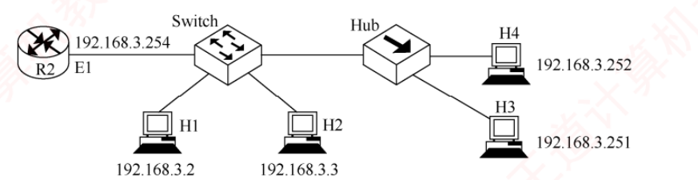
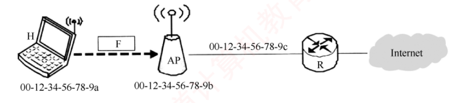
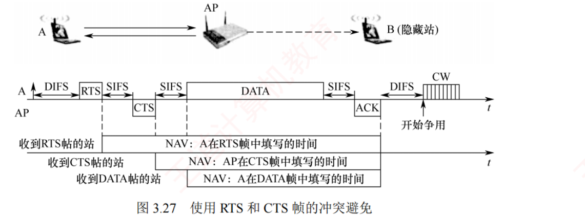

408
408先答旧题
GBN 和 SR 的发送窗口上限？
信道利用率公式？
零比特填充的规则？
上一话是一根线两头。局域网里是很多人共用一根线，谁能说话？这就是介质访问控制。这一话从静态分配讲到竞争，再讲到无线、交换机和广域网。
其之壹信道划分
静态分配，没有冲突，适合持续通信。
四种复用
FDM 频分（调频广播）。TDM 时分（轮流）；统计 TDM（按需）。WDM 波分（光的 FDM）。
CDM 码分：每站有一个码片序列，彼此正交。发 1 时发码片，发 0 时发反码，叠加传输。
解码：接收向量 · 码片 ÷ 码片长度 = +1 表示 1，−1 表示 0。
走一遍码分：A = (1,1,1,1)，B = (1,−1,1,−1)，两者内积为 0。A 发 1，B 发 0，线路上是 A − B = (0,2,0,2)。解 A：(0+2+0+2)÷4 = 1。解 B：(0−2+0−2)÷4 = −1，即 0。
其之貳随机访问
静态分配在突发通信时很浪费。随机访问让大家竞争，冲突了就重来。下面这条线的每一步都在减少冲突：ALOHA 想发就发；时隙 ALOHA 只在时隙开头发；CSMA 先听再发；CSMA/CD 边发边听。
三种坚持
1-坚持：闲就发，忙了一直听。非坚持：忙就等随机时间再来。p-坚持：闲时 p 概率发。
CSMA/CD
开会
先听有没有人在说（载波监听），没人就说；边说边听（冲突检测）；两人同时说了都停下，随机等一会儿（退避）。
只有半双工的共享线路才需要 CSMA/CD，全双工的交换以太网不会冲突。
为什么要有最短帧？发完之前必须能听到冲突，否则已经发完就不知道了。信号来回一趟就是 2τ：
| A 发送时间 | 必须 ≥ 2τ |
|---|
| 争用期 | = 2τ |
|---|---|
| 最短帧长 | L = 2τ · C |
CSMA/CD 公式
最短帧长 L_min = 2τ × C；τ = 距离 ÷ 传播速度。
以太网：争用期 512 比特时间，最短帧 64 B。最长数据 1500 B。
帧间间隔 96 比特时间。
二进制指数退避：第 k 次冲突后，从 [0, 2^min(k,10) − 1] 个争用期中随机选一个等；16 次放弃。
算一遍：距离 1 km，信号 2×10⁸ m/s，τ = 5 μs，速率 1 Gb/s。L = 2×5 μs×1 Gb/s = 10000 b。要是把速率提到 10 Gb/s，帧长不变，距离就要缩短到 100 m。
合上页面说一遍：为什么要最短帧？怎么算？退避怎么选？
发完前要能检测到冲突，所以发送时间 ≥ 2τ。L=2τC。从 0 到 2^min(k,10)−1 选随机数，乘争用期。
其之參802.11 与 CSMA/CA
无线局域网不能用 CD：① 发时听不见别人（自己发射的信号太强）；② 隐蔽站问题，发送方听不到不等于接收方那里没有冲突。
CSMA/CA
预约：RTS → CTS（可选），其他站听到就安静一段时间。
确认：收到数据要回 ACK（因为不能检测冲突）。
帧间隔：SIFS < PIFS < DIFS。ACK、CTS 用 SIFS，优先级最高。
退避：信道从忙变闲才退避。
802.11 地址
地址 1 永远是接收方（RA），地址 2 永远是发送方（TA）。
发往 AP（To DS=1）：地址 1=AP(BSSID)，地址 2=源，地址 3=目的。
AP 发出（From DS=1）：地址 1=目的，地址 2=AP，地址 3=源。
DS（分配系统）把各 AP 连起来。主机发帧先给 AP，AP 经 DS 送往目的，帧在无线段上要说明「现在由谁转发、最终给谁」，所以比以太网帧地址多。
其之肆轮询与以太网
轮询访问：不竞争，轮流来。令牌传递：一个特殊的帧（令牌）在环上传，拿到令牌才能发。无冲突，重负载时效率高。令牌坏了要专门恢复。
以太网 MAC 帧
MAC 地址 48 位，高 24 位厂商。
前导码 8 B 不算帧长。最短 64 B，最大 1518 B。
无连接、不可靠。10Base-T：双绞线；100Base-T：双绞线。
局域网特点：范围小、速率高、误码率低。IEEE 802 把链路层分成 LLC 和 MAC，常见的以太网中 LLC 已很少用。
VLAN
一个大局域网广播太多。VLAN 把一个物理交换机划分成多个逻辑广播域，和物理位置无关。VLAN 之间通信要过路由器（或三层交换）。802.1Q 帧多 4 字节标记，其中 VID 12 位；主机不认这个标记，由交换机在接入端口加上或去掉。
其之伍广域网 PPP
广域网覆盖范围大，常用点对点链路。PPP：点对点、无连接、不可靠（不序号不确认）；只检错。组成：LCP（链路控制）+ NCP（网络层配置）+ 封装。帧的字节填充是转义 0x7D。HDLC 是面向比特的另一种协议，用零比特填充。
其之陸交换机
| 设备 | 层 | 冲突域 | 广播域 |
|---|---|---|---|
| 集线器 | 1 | 不隔离 | 不隔离 |
| 交换机 | 2 | 每个端口一个 | 不隔离 |
| 路由器 | 3 | 隔离 | 隔离 |
自学习
来的时候学源地址：记录「源 MAC ↔ 入端口」。
转发查目的地址：查到就从那个端口转发；查不到就泛洪（入端口外全部）；目的就在入端口同一网段，丢弃。
广播帧：泛洪。
走一遍：刚开机表空。A 发给 B：记 A 在端口 1，不知道 B，泛洪。B 回给 A：记 B 在端口 2，查到 A 在 1，只发端口 1。以后 A、B 之间不再泛洪。
两种转发
直通：只看目的 MAC（6 B）就转发，时延低，不校验。时延 = 6×8 / C。
存储转发：全部接收并校验，时延 = 帧长 / C。
算一遍：1 Gb/s，帧 1500 B。直通：6×8 ÷ 1 Gb/s = 48 ns。存储转发：12 μs。
领域展开
CSMA/CD：L=2τC，以太网 64 B，二进制退避。
802.11：RTS/CTS + ACK；地址 1 收、地址 2 发。
交换机：来学源，转看目的，查不到泛洪。冲突域按端口分。
其之柒实战
chips={"A":(1,1,1,1),"B":(1,-1,1,-1),"C":(1,1,-1,-1)}
seq=[2,0,2,0, 0,-2,0,-2, 0,2,0,2]
m=4
groups=[tuple(seq[i:i+m]) for i in range(0,len(seq),m)]
print("按 m=%d 分组:"%m, groups)
def ip(x,y): return sum(p*q for p,q in zip(x,y))/len(x)
for n,s in chips.items():
v=[ip(g,s) for g in groups]
bits="".join("1" if x>0 else ("0" if x<0 else "-") for x in v)
print(" 用 %s 的码片解: 内积 %s -> %s%s"%(n,[("%+.0f"%x) for x in v],bits,
" (全0 => 本轮未发送)" if all(x==0 for x in v) else ""))
A,B=chips["A"],chips["B"]
tot=[tuple(a*x+b*y for a,b in zip(A,B)) for x,y in zip([1,-1,1],[1,1,-1])]
print("\n叠加验算(A发101, B发110):",tot)
print("与题干一致:", tot==groups)再深一层
收到 12 个数，码片长度 m = 4 ⟹ 切成 3 组，即 3 个比特 (2,0,2,0) ｜ (0,−2,0,−2) ｜ (0,2,0,2)✅ 用 A 的码片 (1,1,1,1) 逐组做规格化内积：
| 组 | 内积 ÷ 4 | A 发的比特 |
|---|---|---|
| (2,0,2,0) | (2+0+2+0)/4 = +1 | 1 |
| (0,−2,0,−2) | (0−2+0−2)/4 = −1 | 0 |
| (0,2,0,2) | (0+2+0+2)/4 = +1 | 1 |
⭐⭐ 本题复算时另外验出了两件书上没说的事，非常能加深理解：
| 用谁的码片去解 | 三组内积 | 结论 |
|---|---|---|
| A (1,1,1,1) | +1, −1, +1 | A 发 101 |
| B (1,−1,1,−1) | +1, +1, −1 | B 发 110 |
| C (1,1,−1,−1) | 0, 0, 0 | C 站本轮根本没发送 |
✅ 叠加验算：A 发 101（贡献 +A, −A, +A）＋ B 发 110（贡献 +B, +B, −B），逐位相加恰好得到 (2,0,2,0)、(0,−2,0,−2)、(0,2,0,2)，与题干逐位相等 ✓
📌 干扰项 111 与 000 的造法：111 是「把 −1 也当成 1」（只看非零就判 1）；000 是「用错了码片」（比如误用 C 的，三组全 0）。
for Lmin_B in [64,128]:
t=Lmin_B*8/100e6*1e6
print("最小帧 %3dB @100Mb/s: 发送时间(=争用期,往返) = %6.2f us ; 单向 = %5.2f us"%(
Lmin_B,t,t/2))
print()
t=128*8/100e6*1e6
print("四个选项:")
for name,v in [("A 2.56 (又除一次2)",t/4),("B 5.12 (单向) <=正解",t/2),
("C 10.24 (往返, 漏除2)",t),("D 20.48 (反而乘2)",t*2)]:
print(" %-24s %.2f us"%(name,v))再深一层
① 发送时间 = 128 × 8 bit ÷ 100 Mb/s = 10.24 μs（＝往返时延上限） ② 单向传播时延 = 10.24 ÷ 2 = 5.12 μs⚠️⚠️ 干扰项 C「10.24μs」就是漏掉 ÷2 的结果，而且它是算出来的第一个数，最容易顺手选下去——看到自己算出的中间值恰好就在选项里，务必回头确认题目问的是「单向」还是「往返」。本节凡是涉及距离或传播时延的题，「单向 / 往返」这四个字必须逐字读。
📌 四个选项的关系很整齐，一看就知道命题人在考什么：
| 选项 | 值 | 含义 |
|---|---|---|
| A | 2.56 μs | 又除了一次 2（或按 64B 算的单程） |
| B ✓ | 5.12 μs | 单向传播时延 |
| C | 10.24 μs | 争用期（往返）——漏了 ÷2 |
| D | 20.48 μs | 反而乘了 2 |
⭐ 注意本题的最小帧长是 128B 而不是 64B：以太网标准是 64B，但题目可以自设——做题时一律用题干给的值，不要惯性地套 64B。（若按 64B 算会得 2.56μs，正是选项 A。）
dL_bit=800.0
C=1e9 # b/s
v=2e8 # m/s
dt=dL_bit/C
print("帧长减少 %.0f bit @1Gb/s => 发送时间减少 %.1f us"%(dL_bit, dt*1e6))
d_round=v*dt
print("争用期(往返)也要减 %.1f us => 往返距离减 %.0f m"%(dt*1e6, d_round))
print("=> 两站之间(单程)距离至少减少 %.0f m"%(d_round/2))
print()
print("四个选项对应的错法:")
print(" 减少 %.0f m : 算的是往返距离, 没折半"%d_round)
print(" 增加 xx m : 方向反了(帧变短应缩距离)")再深一层
原式： 帧长 / 速率 = 2L / 传播速率 增量： Δ帧长 / 速率 = 2ΔL / 传播速率 Δ帧长 = 800 bit，速率 1 Gb/s ⟹ 发送时间减少 800/1e9 = 0.8 μs ⟹ 争用期也要减 0.8 μs ⟹ 往返距离减 2×10⁸ × 0.8×10⁻⁶ = 160 m ⟹ 单程（两站间距离）减 160 ÷ 2 = 80 m⚠️⚠️ 本题连着两个陷阱，四个选项刚好一一对应：
| 选项 | 踩了哪个坑 |
|---|---|
| 增加 160m | 方向反了 + 没折半 |
| 增加 80m | 方向反了（帧变短应该缩距离） |
| 减少 160m | 方向对，但算的是往返距离，没折半 |
| 减少 80m ✓ | — |
📌 1 Gb/s = 1 bit/ns 这个换算很好用：800 bit ⟹ 800 ns = 0.8 μs，心算即可；同理 200000 km/s = 200 m/μs = 0.2 m/ns。

Lmin=64*8 # bit
C=100e6 # b/s
v=200.0 # m/us
thub=1.535 # us
t_send=Lmin/C*1e6
print("最短帧发送时间(=争用期上限, 往返) = %.2f us"%t_send)
one_way=t_send/2
print("单程预算 = %.2f us"%one_way)
t_prop=one_way-thub
print("扣掉 Hub 转发 %.3f us => 纯传播 %.3f us"%(thub,t_prop))
print("最远距离 = %.1f m/us x %.3f us = %.1f m"%(v,t_prop,v*t_prop))
print()
print("干扰项溯源:")
print(" 忘减Hub : %.0f m"%(v*one_way))
print(" 先减后折半 : %.1f m"%(v*(t_send-thub)/2))再深一层
① 最短帧 64B @100Mb/s ⟹ 发送时间 = 512bit/100Mb/s = 5.12 μs ② 这就是争用期（往返）的上限 ⟹ 单程 = 5.12 ÷ 2 = 2.56 μs ③ 减掉 Hub 的转发时延：2.56 − 1.535 = 1.025 μs ← 最易漏 ④ 距离 = 200 m/μs × 1.025 μs = 205 m⚠️⚠️ 为什么单程里只减一次 Hub 时延：H3 与 H4 都挂在 Hub 上，它们之间的信号只经过这一个 Hub，往返各经过一次——把「往返 5.12μs」折半成「单程 2.56μs」之后，这一个单程里恰好含一次 Hub 转发。（题干问的是 H3 与 H4 的距离，Switch 不在它们之间的路径上，不参与计算。）
📌 三个干扰项的造法，全部还原：
| 选项 | 怎么算出来的 | 错在哪 |
|---|---|---|
| 512 m | 200 × 2.56 | 忘了减 Hub 时延 |
| 359 m | 200 × (5.12 − 1.535)/2 ≈ 358.5 | 减 Hub 与折半的顺序反了（应先折半再减） |
| 200 m | 200 × 1.0 | 把 1.025 粗略取成 1 |
⭐ 本题的模板可以推广：最远距离 = (最短帧发送时间 ÷ 2 − Σ单程上的设备转发时延) × 传播速率。
再深一层
| 选项 | 对应的知识点 | 判 |
|---|---|---|
| A 边发边检测 | 十六字口诀里的「边听边发」 | ✓ |
| B 适用于无线 | CD 用于有线，CA 用于无线 | ✗ |
| C 按跨距与速率定最小帧长 | 最短帧长 = 速率 × 2L/传播速率 | ✓ |
| D 时延→0 时利用率→100% | τ→0 ⟹ 争用期→0 ⟹ 无冲突损失 | ✓ |
📌 CSMA/CD 的十六字口诀（原文，必背）：「先听后发，边听边发，冲突停发，随机重发」——四句话正好对应载波监听、冲突检测、立即中止、二进制指数退避四个机制。
⚠️ B 的记法：CD = Collision Detection（检测）= 有线；CA = Collision Avoidance（避免）= 无线——有线摸得着才能「检测」，无线摸不着只好「避免」。
1）若主机甲和主机乙发送数据时发生冲突，则从开始发送数据的时刻起，到两台主机均检测到冲突为止，最短需要经过多长时间？最长需要经过多长时间？（假设在主机甲和主机乙发送数据的过程中，其他主机不发送数据。）
2）若网络不存在任何冲突与差错，主机甲总以标准的最长以太网数据帧（1518B）向主机乙发送数据，主机乙每成功收到一个数据帧后，就立即向主机甲发送一个 64B 的确认帧，主机甲收到确认帧后方可发送下一个数据帧。此时主机甲的有效数据传输速率是多少？（不考虑以太网帧的前导码）
最短（图 a）：甲乙同时向对方发送数据，信号在信道中间发生冲突后，冲突信号继续向两个方向传播⟹ T = 1km ÷ 200000km/s × 2 = 0.01 ms（＝单程传播时延 t₀）。
最长（图 b）：设甲方先发送数据，当数据即将到达乙方时，乙方才开始发送数据。此时乙方将立即检测到冲突，而甲方要检测到冲突，还需等待冲突信号从乙方传播到甲方。⟹ T = 2km ÷ 200000km/s × 2 = 0.02 ms（＝双程传播时延 2t₀）。
2）t₁ = 1518×8 bit ÷ 10Mb/s = 1.2144 ms（数据帧发送时延）；t₂ = 64×8 bit ÷ 10Mb/s = 0.0512 ms（确认帧发送时延）；t₀ = 2km ÷ 200000km/s = 0.01 ms。
甲方的发送周期 T = t₁ + t₂ + 2t₀ = 1.2144 + 0.0512 + 0.02 = 1.2856 ms。
⭐ 有效数据传输速率 = 发送周期内发送的有效数据量 ÷ 发送周期⟹ 1500×8 bit ÷ 1.2856 ms ≈ 9.33 Mb/s（以太网帧的数据部分为 1500B）。
v=200000.0 # km/s
D=2.0 # km
C=10e6 # b/s
t0=D/v # s, 单程
print("单程传播时延 t0 = %.4f ms"%(t0*1e3))
print("1) 最短(甲乙同时发, 中点相撞) = 2 x (1km/v) = %.4f ms (= t0)"%(2*(1.0/v)*1e3))
print(" 最长(一方即将到达时另一方才发) = 2 x t0 = %.4f ms"%(2*t0*1e3))
print()
t1=1518*8/C; t2=64*8/C
T=t1+t2+2*t0
print("2) t1(1518B)=%.4f ms t2(64B)=%.4f ms 2t0=%.4f ms"%(t1*1e3,t2*1e3,2*t0*1e3))
print(" 发送周期 T = %.4f ms"%(T*1e3))
print(" 有效数据速率 = 1500x8 / T = %.2f Mb/s"%(1500*8/T/1e6))
print()
print(" 对照(混用单位的错误结果):")
print(" 分子也用1518B : %.2f Mb/s"%(1518*8/T/1e6))
print(" 分母t1用1500B : %.2f Mb/s"%(1500*8/(1500*8/C+t2+2*t0)/1e6))
print(" 信道利用率 = t1/T = %.2f%%"%(t1/T*100))再深一层
⭐⭐ 第 1 问的关卡：「两台主机均检测到冲突」——注意是「均」。
设甲检测到冲突的时刻为 T₁、乙为 T₂
恒有 T₁ + T₂ = 2t₀（往返时延），问 max(T₁,T₂) 的最小/最大值
最短：甲乙同时发 ⟹ 信号在正中间相撞
⟹ 冲突信号再各走 1 km 回到两端
⟹ T₁ = T₂ = 2 × (1km ÷ 200000km/s) = 0.01 ms
最长：甲先发，信号即将到达乙时乙才发
⟹ 乙立刻知道（T₂ ≈ 0），甲还要等它传回来
⟹ T₁ = 2t₀ = 0.02 ms「同时开发 ⟹ 最短、一方即将到达时另一方才开发 ⟹ 最长」这两个极端场景要能画出来——最短是单程 t₀，最长是往返 2t₀，两者恰好差一倍。⚠️⚠️ 第 2 问的关卡：分子用 1500B，分母里的 t₁ 用 1518B。
| 位置 | 用哪个数 | 为什么 |
|---|---|---|
| 分母 t₁（发送时延） | 1518 B | 线路上整帧都要发出去，首尾 18B 也占时间 |
| 分子（有效数据量） | 1500 B | 问的是有效数据速率，首尾 18B 是开销不算数据 |
📌 发送周期的四项也别漏：T = t₁（发数据帧）+ t₀（传到乙）+ t₂（乙发确认帧）+ t₀（传回甲）= t₁ + t₂ + 2t₀。这与 3.4 节停等协议的发送周期 TD + RTT + TA 是同一个式子——本题本质上就是一道停等协议的信道利用率题，只是换了以太网的外衣。信道利用率 = t₁/T = 94.5%，但有效数据速率还要再乘上 1500/1518 的净载荷比。
再深一层
CDMA = 码分多址 ┐ TDMA = 时分多址 ├── 全是信道划分（静态）⟹ 不冲突 FDMA = 频分多址 ┘ CSMA = 载波监听多路访问 ── 随机访问（动态）⟹ 会冲突⚠️ 三个「多址（Multiple Access）」的缩写很容易与 CSMA 看混：CDMA／TDMA／FDMA 的第一个字母指的是「按什么划分」（码／时／频），而 CSMA 的 CS 指的是 Carrier Sense（载波监听），根本不是一类东西。看到 xDMA 想「划分」，看到 CS 想「监听」。
⭐⭐ 本题真正的门槛是想明白「先监听了为什么还会冲突」：
t=0 A 监听 ⟹ 空闲 ⟹ 开始发送
t=δ A 的信号还在路上，尚未到达 B
B 监听 ⟹ 也是空闲（听不到还没传到的信号）⟹ 也开始发送
⟹ 冲突根源是传播时延——「信道空闲」这个判断天生带着一个 δ 的滞后；只要 δ > 0，监听就不可能杜绝冲突。这一段推理正是 3.6.2「争用期 = 2τ」与「最短帧长」两个考点的完整来源，务必在这里先想通。🔗 串联：CSMA 挡不住的这类冲突，CSMA/CD 用「边发边听、发现冲突立即停」把损失降到最小，CSMA/CA 则因为无线环境根本听不出冲突，改用「主动避免」（RTS/CTS + 退避）。

再深一层
① 判方向：H 要访问 Internet ⟹ 帧是 H → AP（上行） ⟹ 去往 AP = 1，来自 AP = 0 ② 地址 1 = 直接接收方 = AP = …9b 地址 2 = 直接发送方 = H = …9a ③ 地址 3 = 被 AP 顶掉的那一端 = 真正的目的 H 要出网 ⟹ 下一跳是默认网关 R ⟹ 地址 3 = …9c⚠️⚠️ 第 ③ 步最容易错：地址 3 填的是「R 的 MAC」而不是「Internet 上某台服务器的 MAC」。链路层地址永远只在本网段内有意义——H 根本不可能知道远端服务器的 MAC；它先用 ARP 查出默认网关 R 的 MAC，把帧交给 R，剩下的路由由 R 负责。这正是 3.1 节「帧不跨路由器」的直接应用。
📌 四个选项恰好是三个地址的四种排列，全靠「谁是这一跳的收发两端」来定：
| 选项 | 地址1 | 地址2 | 错在哪 |
|---|---|---|---|
| A | H | AP | 收发方向反了（当成了下行） |
| B ✓ | AP | H | — |
| C | AP | R | 地址 2 应是直接发送方 H，不是 R |
| D | H | R | 两处都错 |
再深一层
| 协议 | 用在哪 | 发确认帧吗 | 为什么 |
|---|---|---|---|
| CSMA | 总线形有线 | 不发 | 基础版协议，只管监听 |
| CDMA | 信道划分（多址） | 不发 | 连 MAC 争用都没有，是另一类方法 |
| CSMA/CD | 有线以太网 | 不发 | 信道好 ⟹ 无连接不可靠，交给 TCP |
| CSMA/CA | 无线 802.11 | 必须发 | 信道差 ⟹ 链路层就地做停等 ARQ |
📌 顺带记一个数字关系：ACK 帧前面的间隔是 SIFS（最短），保证确认不被别人插队——这正好与 3.6.3-05、3.6.3-06 两题串起来。

再深一层
| 机制 | 解决什么问题 |
|---|---|
| RTS / CTS | 信道预约，缓解隐蔽站问题 ✓ |
| ACK 确认帧 | 可靠传输（停等 ARQ） |
| 二进制指数退避 | 冲突后的重试时机（CSMA/CD 与 CSMA/CA 都有，只是参数不同） |
| 多个 MAC 地址（地址 1/2/3/4） | 在无线-有线转换时保留真正的源／目的 |
A 检测信道空闲 → 等 DIFS → 广播 RTS RTS 首部写入：SIFS+CTS+SIFS+DATA+SIFS+ACK（最长） AP 收到 RTS → 等 SIFS → 广播 CTS CTS 首部写入：SIFS + DATA + SIFS + ACK A 收到 CTS → 等 SIFS → 发 DATA DATA 首部写入：DATA + SIFS + ACK（最短的一段） AP 收到 DATA → 等 SIFS → 回 ACK⚠️ 为什么 RTS 和 CTS 都要「广播」而不是点对点发：预约的目的不是通知对方，而是通知所有能听见的第三方「这段时间别发」——隐蔽站 B 听不见 A 的 RTS，但能听见 AP 的 CTS，于是也会乖乖闭嘴。CTS 由 AP 广播这一点，正是 RTS/CTS 能解决隐蔽站问题的关键。
再深一层
| 措施 | 放弃了什么 | 换来了什么 |
|---|---|---|
| ① 无连接工作方式 | 不建连接、不释放连接 | 零建连开销，随时可发 |
| ② 不编号、不要确认 | 可靠性 | 不用缓存副本、不用计时器、不用序号字段 |
⚠️⚠️ 「不可靠」不等于「不检错」：以太网帧尾有 4B 的 CRC-32，检错做得很足，只是检出错误后直接丢弃，不重传——「无差错交付」（交上来的都是好的）做到了，「可靠交付」（一个都不能少）没做到。选项 B「无连接可靠」正是踩在这个混淆上的。
🔗 串联：与之形成鲜明对照的是 802.11 无线局域网——因为无线信道误码率高，它必须在链路层做停等式 ARQ（每帧一个 ACK）；同一个问题，有线选「不做」，无线选「必须做」，判据只有一条：信道质量。
再深一层
100Base-T ⟹ T = 双绞线（Twisted pair） 100Base-FX ⟹ F = 光纤（本题没考，但存在这个标准）⭐ 顺带把 100Base-T（快速以太网）的四个数字记全，都是与 10Base-T 对照着变的：
| 10Base-T | 100Base-T | 变化 | |
|---|---|---|---|
| 速率 | 10 Mb/s | 100 Mb/s | ×10 |
| 最大段长 | 100 m | 100 m | 不变 |
| 帧间最小间隔 | 9.6 μs | 0.96 μs | ÷10 |
| 最小帧长 | 64 B | 64 B | 不变 |
| 争用期 | 51.2 μs | 5.12 μs | ÷10 |
📌 「导向传输介质」这个词：指信号沿着固体媒介传播（双绞线、同轴、光纤），与之相对的是「非导向传输介质」（无线电波、微波、红外）——这是 ch2 的术语。
再深一层
维度① 哪一层的地址：交换机是二层设备 ⟹ 用物理（MAC）地址，不看 IP
⟹ 排除 B、D
维度② 源还是目的：要决定「往哪转」⟹ 当然看目的地址
⟹ 排除 C
⟹ 目的物理地址⚠️⚠️ 本题极易与「自学习」题（3.8-16）搞混，两者用的地址正好相反：| 动作 | 用哪个地址 | 为什么 |
|---|---|---|
| 自学习（写表） | 源 MAC | 只有源地址能说明「它在哪个口」 |
| 转发决策（查表） | 目的 MAC | 要知道「该往哪个口送」 |
📌 与 ch4 的路由器对照：路由器是三层设备，转发决策时查的是目的 IP 地址；「二层看 MAC、三层看 IP」是网络这一科最基本的一条分界线。
C=100e6
for name,B in [("直通(读目的MAC 6B)",6),("误把前导码8B当作要读",8),
("存储转发(最短帧64B)",64),("存储转发(最大帧1518B)",1518)]:
print(" %-24s %4dB -> %8.2f us"%(name,B,B*8/C*1e6))再深一层
目的 MAC = 6 B = 48 bit 转发时延 = 48 bit ÷ 100 Mb/s = 0.48 μs📌 三个干扰项全部可以溯源，正好把两种交换方式的时延量级摆清楚：
| 选项 | 读了多少 | 对应什么 |
|---|---|---|
| 0.48 μs ✓ | 6 B（目的 MAC） | 直通交换 |
| 0.64 μs | 8 B | 误把前导码 8B 当成了要读的部分 |
| 5.12 μs | 64 B | 存储转发读完最短帧 |
| 121.44 μs | 1518 B | 存储转发读完最大帧 |
| 直通交换 | 存储转发 | |
|---|---|---|
| 做法 | 读到目的 MAC 就转发，不等整帧 | 完整接收并缓存整帧后再转 |
| 转发时延 | 非常小（0.48μs） | 较大（5.12 ~ 121.44μs） |
| 差错检测 | 不做 ⟹ 可能把无效帧也转出去 | 做 ⟹ 出错就丢弃 |
| 速率匹配／协议转换 | 不支持 | 支持（不同速率端口可互通） |
| 交换机端口 | 1 | 2 | 3 |
|---|---|---|---|
| 所连主机 | 00-e1-d5-00-23-a1 | 00-e1-d5-00-23-b1 | 00-e1-d5-00-23-c1 |
若主机 00-e1-d5-00-23-a1 向主机 00-e1-d5-00-23-c1 发送一个数据帧，主机 00-e1-d5-00-23-c1 收到该帧后向主机 00-e1-d5-00-23-a1 发送一个确认帧，则交换机转发这两个帧的端口分别是（ ）。
而当 c1 → a1 发送确认帧时，因为转发表中已有 a1 这一项，所以交换机只向接口 1 转发。⟹ 两帧的转发端口分别是 {2,3} 和 {1}。
再深一层
| 拍 | 帧 | ① 学源 | ② 查目的 | ③ 转发端口 |
|---|---|---|---|---|
| 第 1 拍 | a1 → c1 | 写入 {a1, 端口1} | 表中没有 c1 | 泛洪 ⟹ {2, 3} |
| 第 2 拍 | c1 → a1 | 写入 {c1, 端口3} | 表中已有 a1 → 端口1 | 精准 ⟹ {1} |
📌 选项 D 的「{1,2,3}」错在把入端口也算进去了：泛洪的定义是「除接收端口外的所有其他活动端口」——帧从端口 1 进来，就绝不会再从端口 1 出去。
⭐ 本题的另一个隐含前提：题干给的转发表是「当前」的。做这类题一定要按时间顺序逐拍推演，并且每一拍都要先更新表再查表——顺序反了（先查后学）在本题碰巧不影响，但遇到「自己发给自己所在网段」的情形就会出错（见 3.8-18 的 D 项）。
再深一层
早期的网桥通常只有2 个端口，用来把两个以太网段连起来 ⟹ 把端口数做多（16、24、48 口）+ 用专用芯片加速 ⟹ 就成了以太网交换机（也叫二层交换机，「二层」指工作在数据链路层）书上原话：「从实质上讲，它是一个多端口的网桥，能够将网络划分为多个较小的冲突域，从而为每个用户提供更高的带宽。」
📌 三个错项各踩一条本节反复强调的界线：
| 选项 | 错在哪 |
|---|---|
| B | 交换机对广播帧是泛洪，谈不上「过滤」；它过滤的是单播帧 |
| C | 只有网络层设备（路由器）才能分割广播域（除非配 VLAN） |
| D | 交换机是二层设备，看不到网络层协议，谈何互连不同网络层协议 |
⚠️ C 那句「广播域属于网络层概念」值得留意：广播域的边界由「谁能拦下广播帧」决定，而拦得下的只有网络层设备——所以书上把它归为网络层概念（脚注也明写「冲突域和广播域的介绍见本书 4.7 节」）。
再深一层
H4 发确认帧给 H2，路径：H4 → Hub → Switch → H2
① Hub 那一侧：Hub 是物理层设备，盲目复制到除输入口外的所有口
⟹ H3 在物理层上收到了这个信号（虽然网卡比对 MAC 后会丢弃）
② Switch 那一侧：交换表里已有 {H2, 端口x}（第一帧时学到的）
⟹ 精准转发给 H2 一家，H1 收不到
⟹ 除 H4 外，物理层收到的是 H2 和 H3⭐⭐ 「物理层收到」≠「链路层接收」，这是本题唯一的分数所在：| 主机 | 物理层收到信号吗 | 链路层会接收吗 | 原因 |
|---|---|---|---|
| H2 | ✓ | ✓ | 目的 MAC 就是它 |
| H3 | ✓ | ✗ | 与 H4 同在 Hub 下（同一冲突域），信号必然到达；但 MAC 不符，网卡丢弃 |
| H1 | ✗ | ✗ | Switch 精准转发，压根没往 H1 那个口发 |
📌 本题与 3.6 的 2016 真题用的是同一张图（3.6.2CD-11 算 H3 与 H4 的最远距离）——命题人用一张图连出两道题，一道考 CSMA/CD 计算、一道考冲突域，很有代表性。
做完再翻：这些题到底在问什么
最短帧题：有时已知帧长和速率反求距离，或者问速率提高后距离要缩短多少。延迟来回两程，别漏了 2。经过 Hub 时延也要算。 802.11 题：看 To DS 和 From DS，地址 1 收、地址 2 发。 交换机题：查转发表判断从哪个端口发；广播域和冲突域数一数。 交换机时延题：直通 6 字节，存储转发整帧。